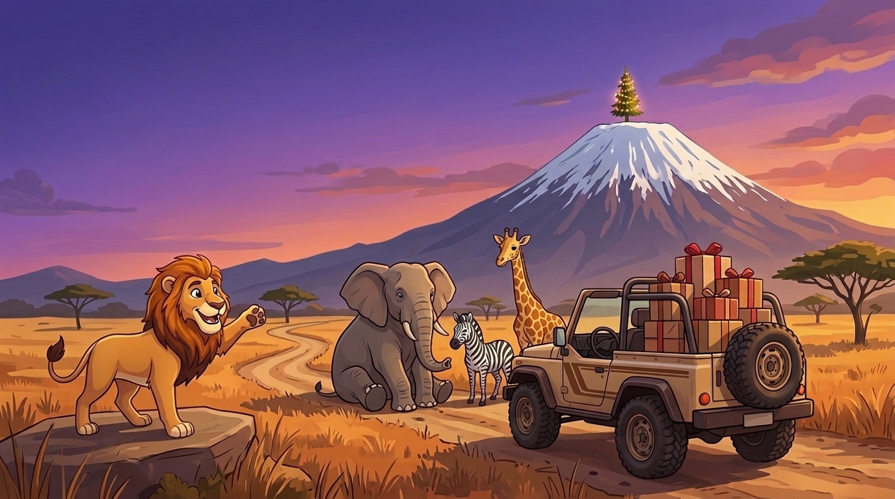
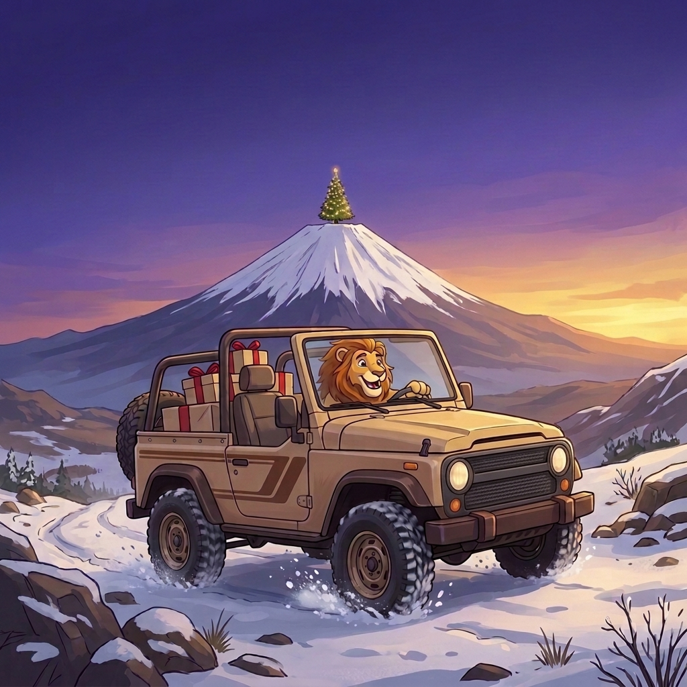
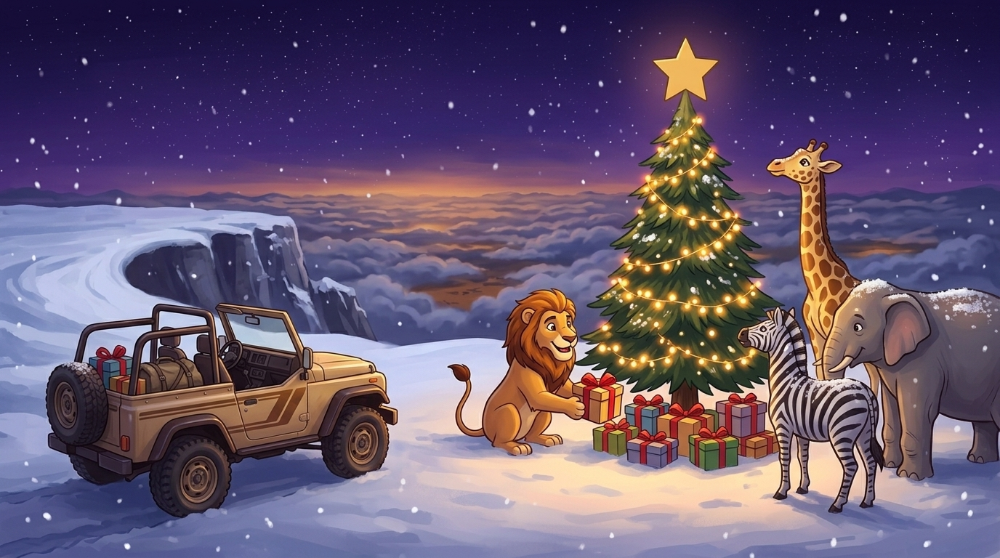
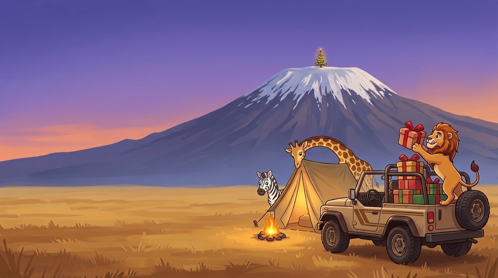

Идея
Единственный снег в Африке лежит на вершине Килиманджаро. Там ёлка, и к ней едут подарки на safari 4x4. Только животные перегородили все тропы. Двигай их по своей оси и выпусти машину направо. Шесть троп снизу вверх по поясам горы: саванна, дождевой лес, вереск, пустошь, альпийская пустыня, ледник. После четырёх открывается вершина.
Понятно за 3 секунды: видишь машину, видишь выезд, двигаешь зверей. Жанр «пробка из блоков»: удачи нет, скорость ничего не решает, ошибиться нельзя, есть «начать заново» и подсказка льва.
Поле своё у каждогоПазл из заранее собранного пула (300 на уровень) + у каждой фигуры свой зверь. Скрин чужого решения не поможет.
Сложность точнаяМинимум ходов задаём числом: 4 → 6 → 8 → 11 → 14 → 17, вершина 20. Каждый пазл перепроверен решателем.
Без окон и розыгрышейВсё открыто с 25.12 00:00 до 26.12 23:59 ET. Призы — уровни по числу троп, мест нет.
Арт уже естьЗвери стиля B из Safari Club (зебра, бегемот, носорог, слон, жираф, фламинго, бревно, 4x4). Нужен только ключ-арт.
Макет
Работает тот же код, что в стенде плейтеста; сервер здесь подменён браузером. Всё открыто сразу. Тяни животное пальцем или мышью вдоль его оси.
Your rewards
Messages from the bot
Арт
Flow (Nano Banana), 12.11, через Cursor. Звери и лев — стиль игры (Safari Club, стиль B). Исходники и варианты — art\out\, разбор — PICKS.md.




Путь игрока
Заявки до игры нет (правило 8): играть сразу после Discord-логина, player ID — только при первом Claim.
Попап и пост
С 14.12 попап на сайте Jumanza и бродкаст: «Christmas on Kilimanjaro, 25 Dec». Ссылка ведёт на страницу ивента.
Discord-логин
Общий слой: вход + guilds.join на сервер Jumanza. С 18.12 открыта тренировочная тропа (3 хода, без приза).
25.12 утром
DM «Merry Christmas», открыты 6 троп. После 4-й открывается вершина. 26.12 — день догнать.
Claim
Уровень → DM «приз готов». Первый Claim: player ID + телефон + почта → проверка → все коды сразу. Дальше Claim мгновенный.
Таймлайн
Время ET, рядом Киев (ET + 7). 25.12 в Украине выходной: открытие в 07:00 по Киеву, без ручных действий.
- Попап на сайте, пост-анонс в Discord, бродкаст. Логин работает (предрегистрация общего слоя).
- Тренировочная тропа: учимся двигать зверей. Без приза и без player ID. Даёт живую долю прохождения до заморозки 22.12.
- Сочельник: пост + бродкаст «утром тропы открыты».
- Утро Рождества. Все 6 троп, вершина после 4. Пост с пингом роли, DM всем вошедшим.
- Пост «первые на вершине» (ники без цифр).
- DM тем, у кого есть непройденные тропы.
- DM «6 часов до конца» + что осталось игроку.
- Тропы закрываются.
- Личный оффер промокодом по высшему уровню, 72 ч, лимит 1.
- DM незабравшим призы. Claim до 03.01 23:59 ET.
Призы как у Storm
Одна таблица, уровни по числу троп. Каждый уровень один раз. Номиналы взяты как у Storm Rush (решены там 11.11): одинаково для всех брендов на Рождество.
| Уровень | Приз | Кодов (запас ~1,5×) | Оффер 27.12 по высшему уровню |
|---|---|---|---|
| 2 тропы | 1 FP | 150 | 1–3 тропы: Base Camp Pack 9.99, +100% |
| 4 тропы (открывает вершину) | 2 FP | 150 | 4–5 троп: Safari Trail Bundle 19.99, +40% |
| Все 6 троп | 5 FP | 120 | 6 троп: Kilimanjaro Treasure 39.99, +50% |
| Вершина (ёлка) | 1 SC | 100 | вершина: Summit Star Chest 39.99, +75% |
| Полный проход | 8 FP + 1 SC | Офферы — промокоды: 60 / 40 / 40 / 80 |
Бюджет на 100
100 начали → ~75 дошли до 2 троп, ~60 до 4, ~45 вершина, ~40 все 6. Это ≈ 400 FP + 45 SC. Потолок — число загруженных кодов.
Покупка не помогает
Оффер приходит после закрытия и на прогресс не влияет. No purchase necessary.
Вершина — 1 SC
Только аккаунтам, которые на сервере Jumanza до 14.12, как у Storm. Подозрительное — по export.
Сложность
Цель — проходят 60–85%. Подсказок льва 3 на тропу: каждая показывает один следующий ход кратчайшего решения. Правится одним числом в server/levels.js, пул пересобирается скриптом.
| Тропа | Пояс горы | Минимум ходов | Фигур |
|---|---|---|---|
| Тренировка (18.12) | Base camp | 3 | 4–6 |
| Тропа 1 | Savanna | 4 | 5–7 |
| Тропа 2 | Rainforest | 6 | 6–8 |
| Тропа 3 | Heather slopes | 8 | 7–9 |
| Тропа 4 | Moorland | 11 | 8–10 |
| Тропа 5 | Alpine desert | 14 | 9–11 |
| Тропа 6 | Glacier | 17 | 9–12 |
| Вершина | Christmas tree on the peak | 20 | 10–12 |
Ориентир жанра: «новичок» — до 8 ходов, «средний» — 15–20, «эксперт» — 30+. Мы держимся в лёгкой половине; что жмёт — увидим на плейтесте 08–10.12 и на тренировочной тропе 18–21.12.
Техника
Механика готова 12.11 в jumanza\mechanic\ — в формате конкурсов Witching Hours, как у Storm Rush. Общий слой собирает основной чат.
Сделано
- Генератор + решатель (
shared/jam.js), пул по 300 пазлов на уровень, каждый перепроверен. - Модуль
trail: ходы проверяет сервер, засчитывается любое решение, подсказка льва, «начать заново». - Расписание ET, тексты бота (EN), уровни, офферы.
- Стенд
node dev/server.js --lanна порту 8798: плейтест, репетиция--show,/stats, Claim с одобрением. - Тесты: юнит + e2e всей репетиции по HTTP.
Нужно от общего слоя
- Канал ивента уже есть: #🏔️・kilimanjaro, открыть 18.12.
- 8 конкурсов бренда открыты одновременно; вершина при 4+ тропах (
schedule.canStart). - Приз = уровень, Claim с player ID при первом Claim и ручным одобрением (как Storm).
- DM по таймлайну, офферы промокодом 27.12, пул кодов отдельный.
- Бот на сервере Jumanza с правами в канале ивента.
- Подключение:
MODULES.trail = require('.../jumanza/mechanic/server/trail'), params{ level }.
Анти-абуз и план Б
Решатель-скрипт
Написать его легко, как и у Storm. Выгода — максимум 8 FP + 1 SC на человека. Поэтому только лог: вершина быстрее 20 с или ровно минимум ходов на всех тропах → staff смотрит.
Мульти-аккаунты
Player ID один на Discord, телефон и почта в форме, ручное одобрение. SC за вершину только аккаунтам с сервера до 14.12.
Если упало
Прогресс сохраняется после каждого хода. Упал сервер — продлеваем закрытие на время простоя (пост заранее написан). Кончились коды — Claim ждёт, дозагрузка из админки.
Цели
Ориентиры на реальных цифрах Witching Hours: 30–100 активных на бренд.
Решено 12.11
Открытых вопросов нет.
- Player ID Jumanza — только цифры, как у Storm.
- Офферы — Base Camp Pack / Safari Trail Bundle / Kilimanjaro Treasure / Summit Star Chest — одобрены.
- Ключ-арт — 4 кадра (тропа с пробкой, вершина с ёлкой, попап 1:1, базовый лагерь): пакет промптов для Cursor + Google Flow готов.
- Канал #🏔️・kilimanjaro на сервере Jumanza создан, скрыт до 18.12.
- Дежурные 25–26.12 и очередь player ID — будут.
Анонс в Discord
Голос льва Jumanza, живой и без пафоса. Публикация 14.12.
🏔️ Christmas on Kilimanjaro — Dec 25–26
There's only one place in Africa with snow on Christmas, and this year the tree is up there. The gifts are packed in the safari 4x4, but the animals have parked themselves on every trail up the mountain.
Slide them out of the way, get the 4x4 through, and climb from the savanna to the glacier. Clear 4 trails and the summit opens. Rewards come with every step: 2, 4 and 6 trails, plus a gift under the tree on top.
🐾 Practice trail opens Dec 18. The real climb starts Christmas morning, Dec 25, 12:00 AM ET, and stays open until Dec 26, 11:59 PM ET. No rush, no timer.